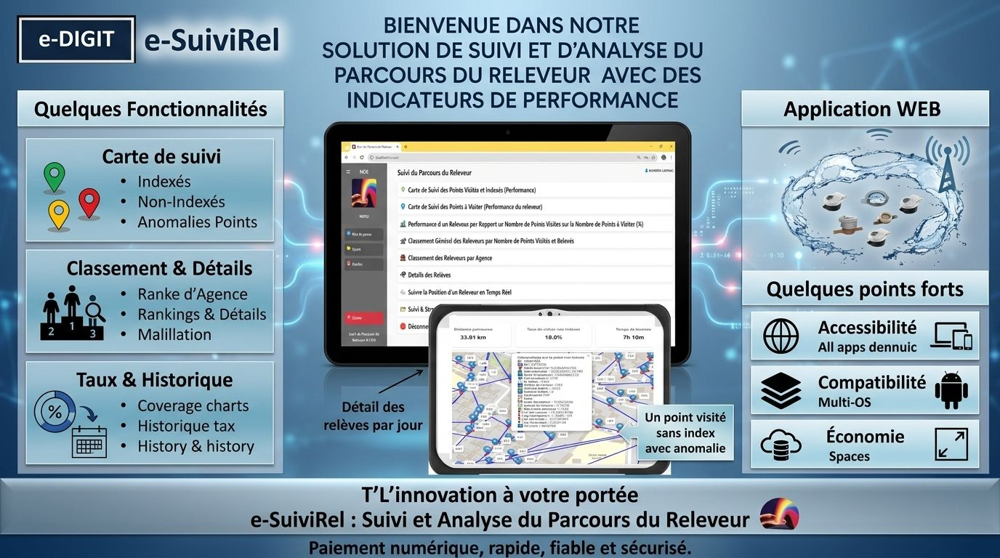
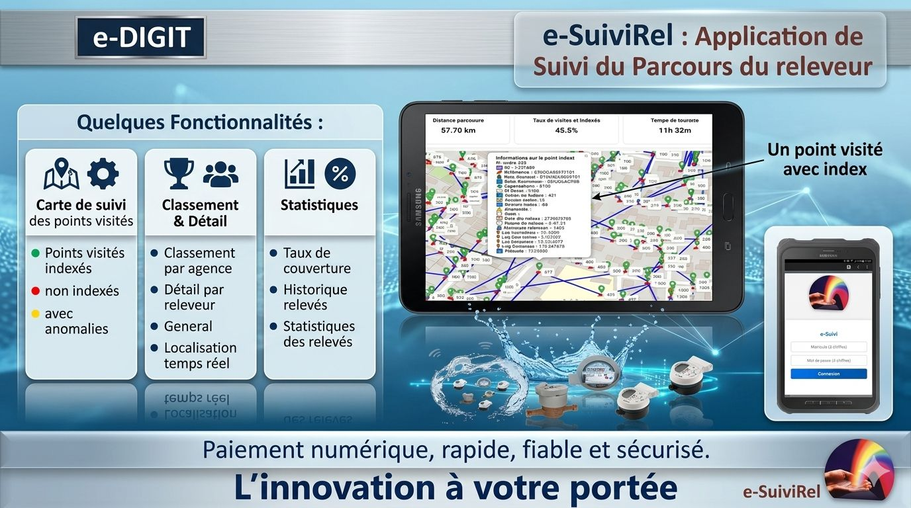
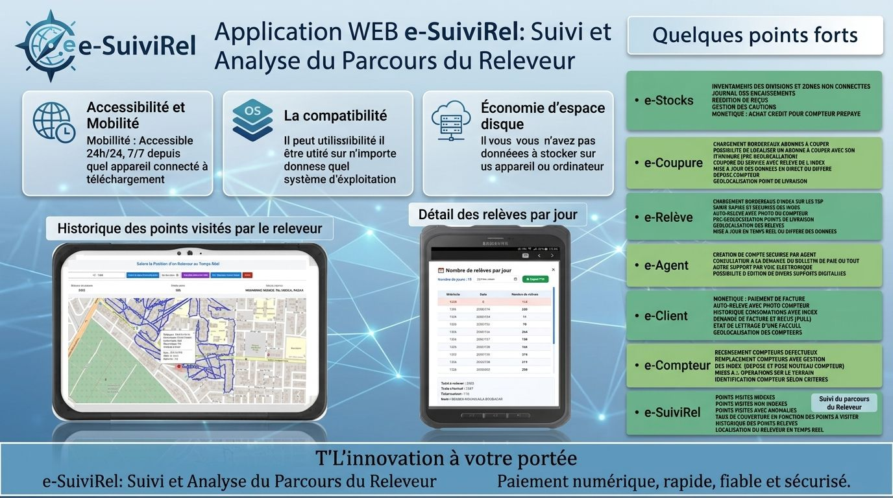

Suivi intelligent des releveurs et des opérations de relève en temps réel
e-SuiviRel est une solution web de la plateforme e-Major permettant de suivre en temps réel les activités des releveurs, d’analyser les performances et de superviser les opérations de relève. Accessible sur mobile (Android, iOS) et desktop, elle offre une visibilité complète des données terrain connectées au système ERP Gd’Or Major.

Carte de suivi en temps réel

Détail des relèves journalières

Statistiques et indicateurs de performance

Suivi en temps réel, analyse et performance terrain